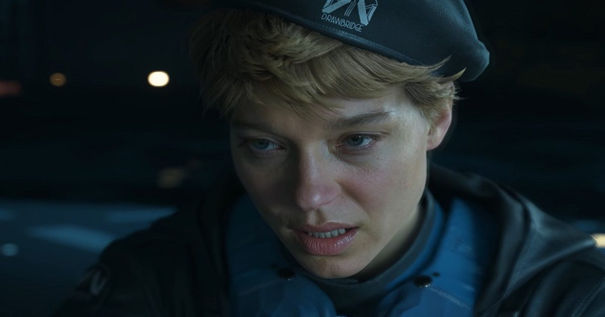

Кодзима раскрыл новые подробности шпионского боевика Physint в духе Metal Gear и объяснил, почему не доверяет DLSS 5
Прославленный гейм-дизайнер и глава Kojima Productions Хидео Кодзима (Hideo Kojima) в подкасте Koji10 рассказал о разработке новых игр и поделился мнением об интеллектуальном масштабировании DLSS 5 от Nvidia.
Источник изображения: Kojima Productions